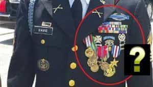

< < < Back
The Rising Epidemic Of Men Falsely Claiming To Be Military Veterans – Return Of Kings
Return Of Kings has more than a few veterans among its readership. Many of you are probably familiar with the crime that is a cardinal sin among anyone who actually wore a uniform with honor: Stolen Valor.
Stolen Valor is the crime of claiming military medals, awards or accomplishments that one has not legitimately earned. There was an act passed in 2005 that made Stolen Valor a crime. However, this was struck down by the Supreme Court on the grounds of free speech. Honestly, they were probably correct in doing so: making a lie (while not under oath) a crime is a slippery slope that could be utilized by the Social Justice Warriors. Thankfully, Congress passed another act in 2013 making Stolen Valor a crime ‘if used for material gain.’

Semper Fries! This fake marine was caught by a local police sergeant. The investigation later revealed he was a drug addict.
It is considered something of an epidemic within the veterans community. Stolen Valor investigator (and legit Navy SEAL) Don Shipley has estimated that there is only one genuine Navy SEAL for every 300 people claiming to be a Navy SEAL.
The crime of Stolen Valor is considered by many leftists to be a “victim-less” crime. However, Stolen Valor is typically accompanied by a host of other crimes: fraud, embezzlement and even murder. Check out Jonn Lilyea’s thisainthell.us blog for a large listing of Stolen Valor investigations, and you’ll find that the vast majority of them involve numerous other criminal behaviors.
Some leftists claim that Stolen Valor is free speech. As their hypocrisy knows no limits, they go after Milo for exercising his right to free speech.
What This Says About Society Today
In 2017, we live under the ravages of feminism, SJW’s and a liberal ‘fake news’ media. The American Man, as an ideal concept, has been destroyed by years of feminist indoctrination at school and at home: it has become generational, as parents teach the same toxic values to their boys that they learned as children.
As much as the SJW’s would hate to admit it, you cannot fight biology: men have a desire to be warriors and receive glorious accolades for their toughness and courage in battle. Part of the damage done by Cultural Marxism is that in the past, Victoria Crosses and Medals of Honor were earned, whereas today most beta men feel that they are entitled to the honors and accolades without earning them.
All of this culminates to create a society of men who feel the temptation to seek honor and status without actually doing the things to gain (or be worthy of) such accolades and feel completely okay about it. They only show remorse when they get caught: the whole time they were deceiving people at the bar, they were okay with it.
In fact, one of the causes of Stolen Valor might be the general slut culture western women have embraced: when female 5s and 6s think they can get male 9s and 10s, many betas who have not been introduced to game may claim military accolades in order to compete.
The Next Move for Social Justice Warriors
In the spirit of participation trophies and gender “identity,” I expect the Social Justice Warriors to start standing behind those guilty of Stolen Valor. Why? Because if you “identify” as a Navy SEAL or decorated Combat Infantryman, you should be able to call yourself one.
In the name of equality, I see the standard for non-white soldiers receiving the Medal of Honor, Silver Star and Bronze Star w/V to decrease significantly in order to make sure that the recipients are “ethnically diverse” and “properly representative” of their proportion of the population.
In fact, I already saw this happen in Iraq: The award of the coveted Combat Infantryman Badge (and the Combat Action Badge for non-Infantry soldiers) to soldiers in the U.S. Army was seriously de-legitimized. For those who do not know, the Combat Infantryman Badge and Combat Action Badge is awarded to soldiers for actually being in combat. It is generally expected that one must have fired their weapon in anger, had weapons fired at them in anger, or been close enough to indirect fire (such as artillery or mortars) to have been plausibly injured by it.
By 2008 in Iraq, soldiers were getting the award for being as far as 1km away from a mortar round hitting the FOB (Forward Operating Base). At this range, they had no chance of being injured.
Why Men Commit Stolen Valor
Having read numerous cases posted at thisainthell.us and other Stolen Valor investigation sites, I’ve found that both alphas and betas commit this crime.
For betas, it is usually insufficiency, and the desire to get something without earning it. Many of them are failures in life, and desire praise for their made-up accomplishments. In some cases, betas who have actually served inflate their record because they didn’t live up to their own expectations.
Your average cucked beta with no accomplishments.
For alphas, it is almost always because they are good enough liars to fool people. Some alphas that have committed Stolen Valor have even tricked some real Navy SEALs or U.S. Marines. They often use these made-up awards to commit fraud to steal money from sympathetic audiences.
Stolen Valor and the Red Pill
Most men who commit Stolen Valor are the fat slobs we all abhor.
I would put it to the ROK readership that the manosphere should take a general stance against Stolen Valor. Not only does Stolen Valor represent the degeneracy of the entitlement culture we have today, but it genuinely does harm to those who did honorably serve as Navy SEALs or Army Rangers. Often times, these phony heroes are the obnoxious asshole at the bar who drinks too much and starts unnecessary fights.
There may be some among the readership here who feel that if someone claims to be a Navy SEAL to get laid, so what? Women lie all the time in the sexual marketplace, so why can’t we?
I would first point out that if your game is solid and your frame is where it should be, you do not need to claim to be a war hero to have casual sex. I believe such claims (even if legitimate) are a crutch that prevents men from developing their skill at game. In fact, I don’t even bring up the fact that I served in the U.S. Army and did two deployments to Iraq and Afghanistan when speaking with women anymore. The only exception is if the woman I am approaching was in the military as well, as it can be a good platform to open with.
Secondly, lying about military accolades can easily backfire. As I will discuss in the next section, it generally quite easy for any legitimate veteran to sniff out Stolen Valor. Given the large influx of “Stolen Valor call-outs” on YouTube in the past year or two, there is a good chance a legitimate veteran will call you out and make you “internet infamous.” And probably embarrass you in front of any potential approaches within earshot.
Lastly, and most importantly, Stolen Valor is an inherently beta male act. Even when con-men alphas are doing it. It shows a lack of self-respect and self-confidence in one’s own real accomplishments. It is a sign of the general laziness that parallels the “free college” Bernie Sanders fanatics. If your frame is tight, and you are confident in yourself as a man, lies are not going to help you. In fact, they are probably working against you by building up a false sense of security about yourself. I would recommend using kratom over committing Stolen Valor.
Identifying Stolen Valor

Here are a few “tells” that should raise your eyebrows if you hear them at the bar or a local event. You will often see these phonies wearing hats with pins or biker cuts with numerous patches. Some are brazen enough to (badly) wear Army or Marine Corps uniforms in public.
1. They claim their record and awards are “classified.” No awards are classified. Although in some limited circumstances the mission surrounding the record may be classified, awards always show up on a DD-214 (the discharge paperwork every veteran has.)
2. They claim to have been a Navy SEAL. Given the excellent self-promotion of the Navy SEALs, everyone seems to want to claim to be one. As previously mentioned, Stolen Valor investigator Don Shipley has estimated that only 1 in 300 of claimed Navy SEALs are actually worthy of the title. Always ask them what their BUD/S (Basic Underwater Demolition School) Class Number was. If they can’t immediately say it, they are almost certainly not a Navy SEAL.
3. If they are claiming they were in the Army and served in Iraq or Afghanistan, make some joke about reflective PT belts. If they laugh, they are probably legit. Don’t ask why.
Believe it or not, this is probably a real U.S. Army Soldier.
4. Ask anyone claiming Army or Marine Corps service since the late 1980s “Where do they keep the keys to the HumVees?” If their answer is anything other than “HumVees do not have keys,” they are almost certainly lying.
5. If they are acting loud, obnoxious or bragging about how they were Special Forces or a Navy SEAL, they are almost certainly not Army Special Forces or a Navy SEAL. I’ve seen a lot of these guys around during my time in, and spoken with them. They never break frame and have enormous amounts of self-discipline. They are tough badasses, and they know it. And they don’t need to tell the world how awesome they are.
Unfortunately, I expect cases of stolen valor to continue increasing as competition for women and resources get tougher.
Read More: 5 Tips To Raise A Strong Son